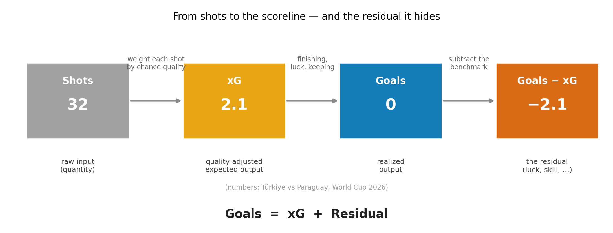
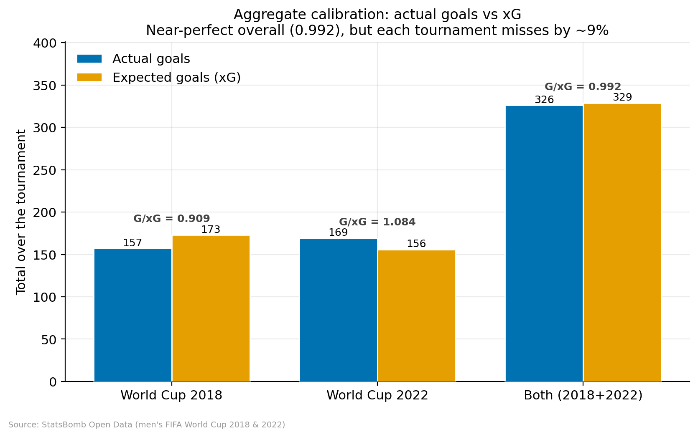
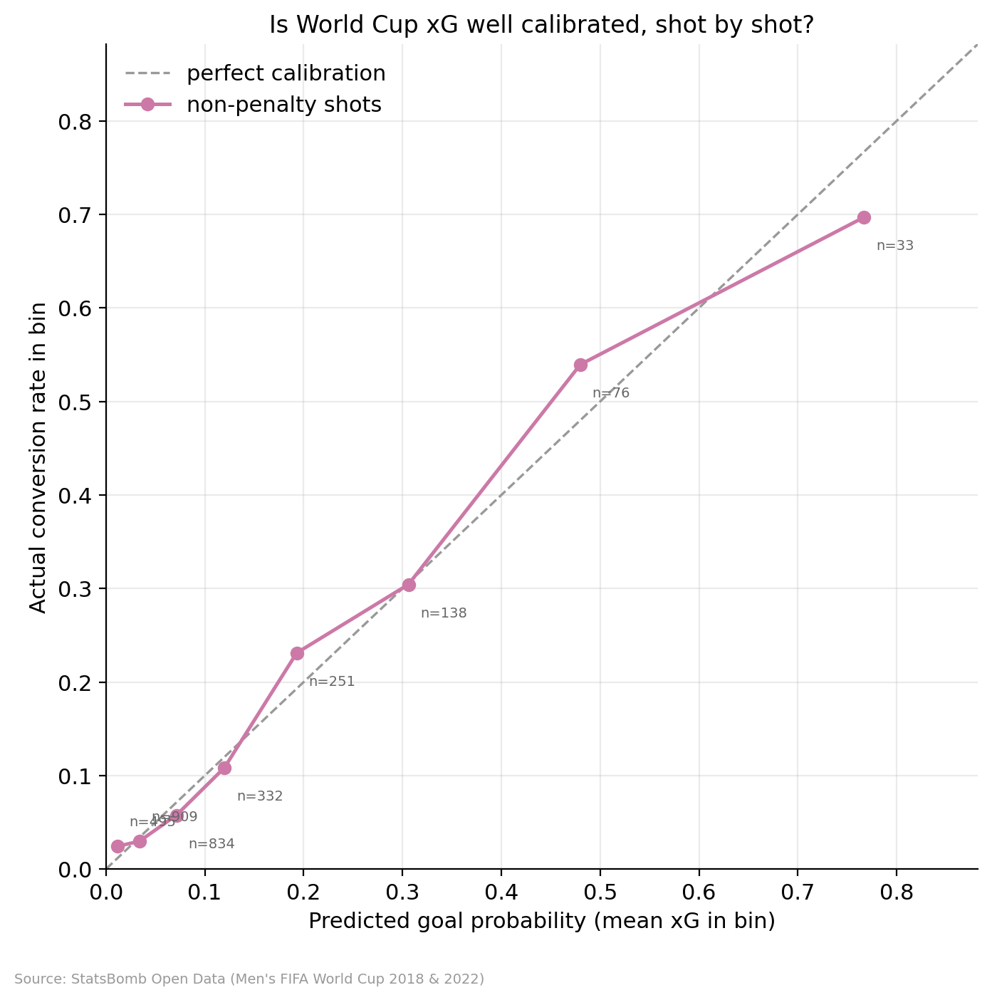
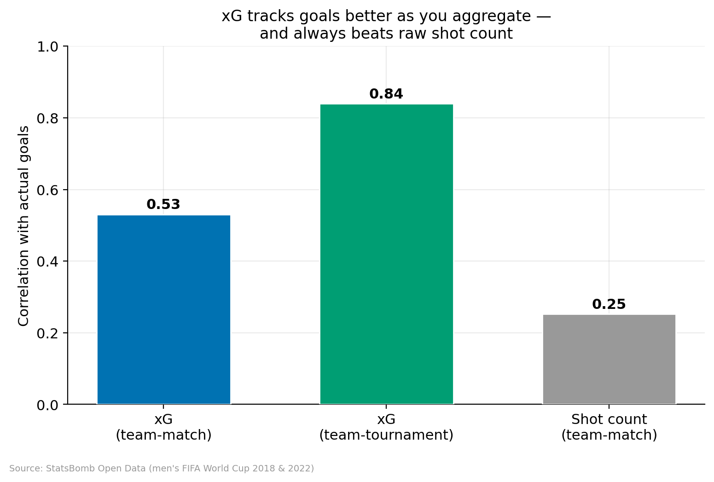
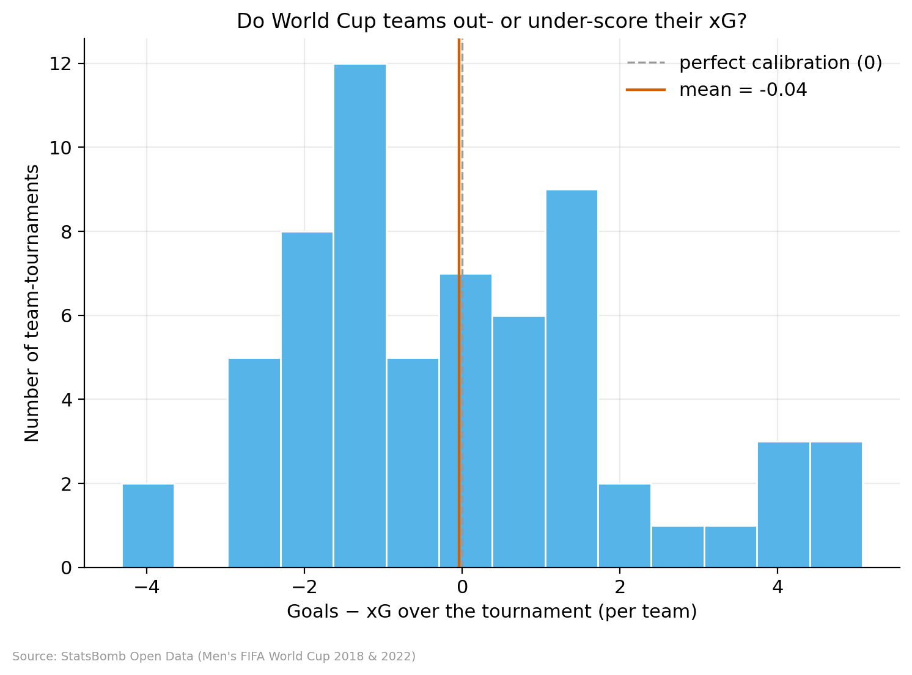
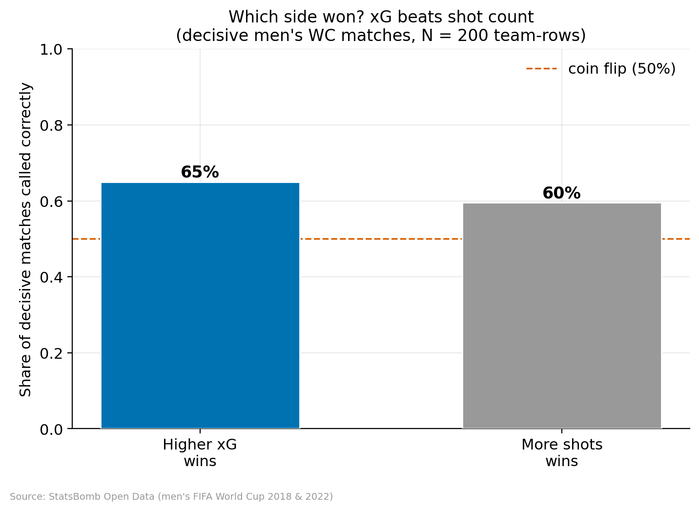
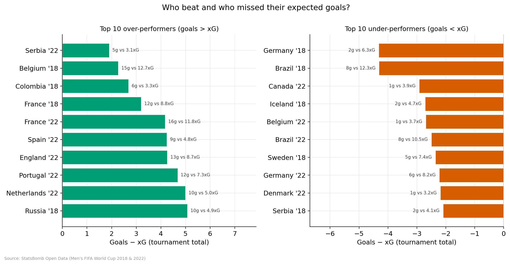
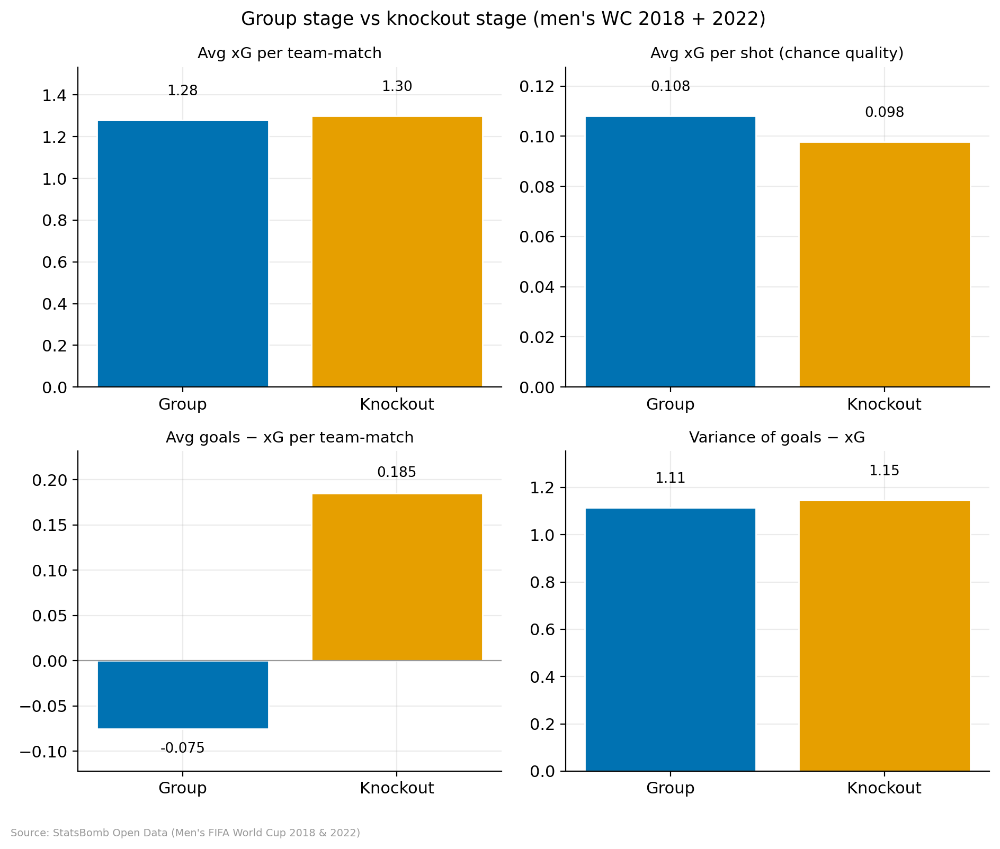
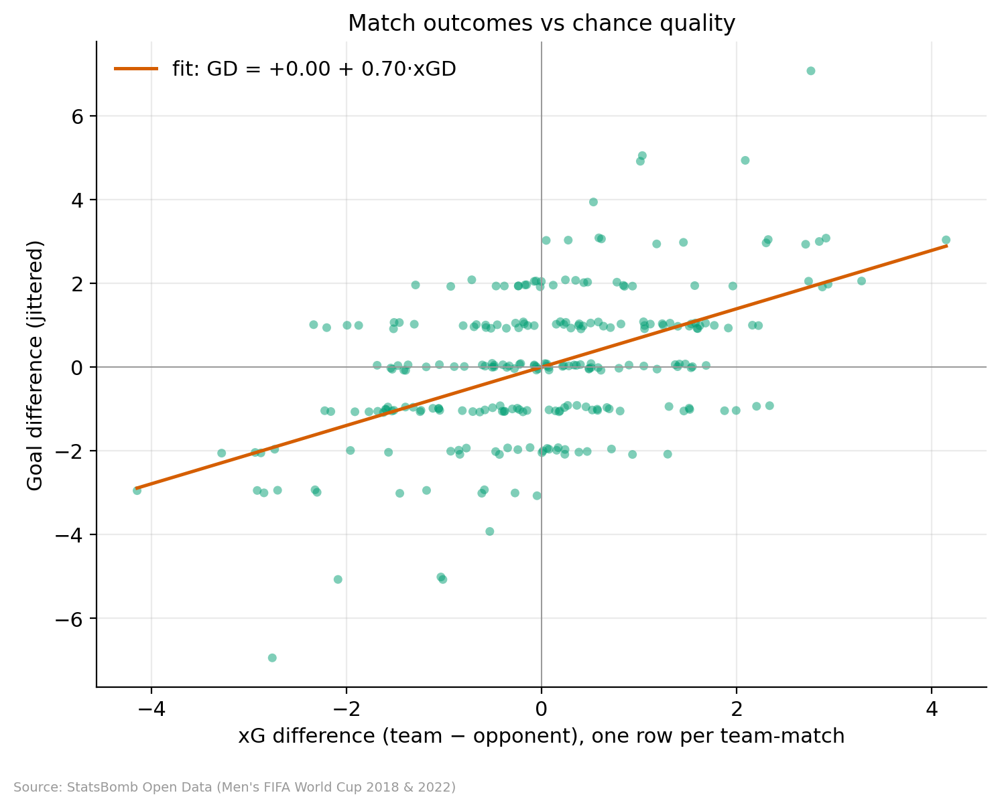
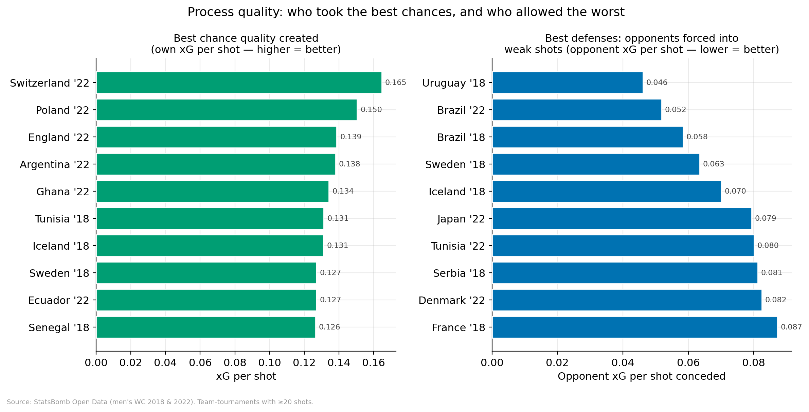

What Does the Scoreline Reveal? Expected Goals and the Economics of World Cup Upsets
1. A scoreline that hides more than it reveals
On 19 June 2026, Türkiye played Paraguay in a Group D match they had to win to stay in the World Cup. The scoreline was Türkiye 0–1 Paraguay. Paraguay scored inside the second minute through a long-range strike, lost a player to a red card before half-time, and then defended for an hour with ten men. They won. Türkiye went home.
None of that is in dispute, and none of it is unfair. The scoreline is the tournament fact: Paraguay took the three points and the place in the next round, and no amount of analysis changes that. A World Cup is decided by goals, not by chances. The scoreline is final.
But the scoreline is also strangely silent about how the match was actually played. Türkiye took 32 shots to Paraguay’s seven and held 78% of the ball. By expected goals — the metric this whole post is about — Türkiye created about 2.1 goals’ worth of chances to Paraguay’s 0.3 (xG here from Opta via The Analyst; this 2026 game is a motivating example, not part of the StatsBomb sample analysed below). On every measure of how the game was played, Türkiye dominated. On the only measure that decides the tournament, they lost.
So the result records something real and something incomplete at the same time. The scoreline tells us what happened. But what does it reveal about how the match was played — and what does it hide? Answering that requires a second number to set beside the score: one that measures not who won, but the quality of what each team created.
2. xG as expected output
That number is expected goals (xG). It assigns every shot a probability of becoming a goal, estimated from a large history of comparable shots. A shot worth 0.30 xG is one that shots like it have historically been scored about 30% of the time. Add up a team’s shot probabilities and you get its expected goals for the match: the number of goals an average team would score from those exact chances.
How is that probability actually generated? An xG model is a classifier trained on hundreds of thousands of past shots, each labelled goal or no-goal. For any new shot it reads off a handful of measured features and returns a fitted probability. The features that matter most are geometric — the distance to goal and the angle the two posts subtend from the ball — followed by the body part (a header is far harder than a foot from the same spot), whether the shot is a penalty (a near-fixed ≈0.79) or a free kick, and how the chance was created (a cut-back or through-ball is worth far more than a hopeful cross). The model used here, StatsBomb’s, goes further and reads a “freeze-frame” of the instant the shot is struck: where the goalkeeper is standing and how many defenders sit between the ball and the goal. In its simplest, classic logistic-regression form, the probability is
xG(shot) = Pr(goal | features) = 1⁄1 + e−(β0 + β1·distance + β2·angle + β3·header + …)
and a team’s expected goals for a match is just the sum over its shots:
xGteam = ∑shots i xG(shoti)
(Modern models swap the logistic function for gradient-boosted trees or neural nets, but the object is identical: a fitted probability per shot, summed.) A shot’s xG is therefore not a verdict on whether a player should have scored — it is the historical base rate for that kind of chance.
This gives a clean way to organise the whole question. A match turns shots into goals, and we can read it as a short production line:

Goals = xG + Residual.Each stage measures something different. Shots count raw chances without regard to quality. xG weights each shot by how dangerous it was, giving a quality-adjusted expectation. Goals are the realized output that ends up on the scoreboard. And the difference, the residual goals − xG, is whatever separated the expectation from the result. Türkiye’s line reads 32 → 2.1 → 0 → −2.1: a lot of shooting, only moderate chance quality, no goals, and a large negative residual.
That identity sets up the two questions the rest of the article answers. First: is xG a credible expected-output benchmark — can we trust it as the right thing to compare goals against? And second, once we trust it: what does the residual tell us about a match that the scoreline alone does not? A benchmark is only worth having if it is accurate, so start there.
3. Is xG a trustworthy benchmark?
A benchmark earns trust by being right on average — by neither systematically over- nor under-counting goals across many matches. On that test, World Cup xG passes comfortably. Across the two most recent finished men’s tournaments (2018 and 2022 — 128 matches, 3,120 non-shootout shots), teams scored 326 goals against 328.6 xG, a ratio of 0.992. Over thousands of shots, the benchmark is off by less than three goals.

But Figure 3 also contains the warning. Each individual tournament misses by about 9% — and in opposite directions. The accuracy is a property of the aggregate, not of any single slice. The same holds shot by shot: bin every non-penalty shot by its predicted xG and the actual conversion rate tracks the prediction almost exactly, deviating only on the very best chances.

A simple regression of team-match goals on team-match xG tells the same story: goals = 0.23 + 0.81 · xG, and a joint test of the ideal benchmark (intercept = 0, slope = 1) is not rejected at the 5% level (p = 0.076). xG is, to a good approximation, an unbiased predictor of goals.
The conclusion is the key one for everything that follows: xG is well calibrated in aggregate, but noisy in small samples. It is a trustworthy expected-value benchmark over a season or a whole tournament — and a poor oracle for any single match, where the realized goals can sit far from the expectation. That noise is not a defect to apologise for; in a moment it becomes the main subject. But first, what does this benchmark add over the cruder thing we already had?
4. What xG reveals that shot counts do not
Before xG, the standard shorthand for “who was on top” was the shot count. Türkiye’s 32-to-7 edge is exactly that kind of statistic. The trouble is that shots are raw quantity: a tap-in and a hopeful effort from forty yards both count as one. xG exists to replace quantity with quality-adjusted quantity — and the difference shows up immediately in how well each tracks goals.

Shot count carries surprisingly little signal (correlation 0.25 with goals); xG carries roughly twice as much (0.53), and much more once aggregated (0.84). The reason is exactly the Türkiye game. Thirty-two shots did not mean thirty-two dangerous chances. At about 0.07 xG per attempt, most were low-value efforts forced from distance against a packed, ten-man defence. Shot count said Türkiye overwhelmed Paraguay; xG said the chances were mostly weak — and on that point, the scoreline agreed with xG, not with the shot count.
So xG is both trustworthy on average and genuinely more informative than the quantity measures it replaces. That makes it a benchmark worth subtracting from goals — which returns us to the residual. When the realized output departs from the expected output, what is actually in that gap?
5. Reading the residual: luck, skill, and incentives
The residual goals − xG is not one thing, and it is tempting to enumerate a dozen separate causes. It is more useful to sort them into three economic categories, in rough order of how much of the residual they explain.
A. Mostly noise
The largest part of the residual is simply luck — the gap between an expected value and a single realized draw. Three pieces of evidence point the same way. xG predicts a single match only loosely (Section 3). The 2018 and 2022 aggregate errors were large and pointed in opposite directions, the signature of sampling noise rather than bias. And the distribution of goals − xG across all team-tournaments is centred near zero and roughly symmetric:

The cleanest demonstration is to ask how often the better chances actually win. Among decisive men’s World Cup matches, the team with the higher xG won only 65% of the time — better than the team with more shots (59%), but still leaving roughly a third of results to the side that created less.

The interpretation is economic, not mystical. A team takes around 25 shots a match and a tournament lasts seven games; the law of large numbers, which would let outcomes settle onto expectations, never fully arrives. In a short tournament, a large share of the residual is irreducible randomness.
B. Some persistent skill
If the residual were only noise, it would not persist: a team’s over-performance in one tournament would tell you nothing about the next. It mostly doesn’t — but not entirely. Among the 24 teams that played both 2018 and 2022, the correlation of goals − xG across the two is 0.32: weak, but positive.

The persistence has recognisable faces: France (+3.2 then +4.2) and Portugal stayed above their xG across both tournaments, while Brazil (−4.3 then −2.5) and Germany (−4.3 then −2.2) stayed below. Most over-performance is variance, but a thin layer reflects something real and team-specific — elite finishing, or elite goalkeeping at the other end — productivity the average-shooter benchmark cannot see and so leaves in the residual.
C. Some structured selection and incentives
The final piece is the most economic: teams do not generate shots at random; they choose them under incentives, and the World Cup is a selected, strategic environment. Three signs of this. Match state: a side chasing the game shoots from anywhere while a side protecting a lead concedes only difficult chances — Türkiye’s 32 forced attempts are the fingerprint. Selection by round: knockout teams take more shots of slightly lower quality, yet over-convert their xG, because the sides that survive are disproportionately the elite finishers and keepers the benchmark under-prices.

(Penalties, by contrast, are a near-fixed ≈0.79 chance and turn out to be well-behaved: 12.4% of xG and 12.0% of goals, so they neither inflate nor distort the residual.) The lesson is that part of the gap is not luck at all but behaviour — chances created and conceded under strategic pressure that the benchmark, reading only geometry, cannot fully price.
Noise, a thin layer of skill, and a structured layer of selection and incentives: that is the whole residual. These three forces matter most when they collide in a single result that the scoreline cannot explain on its own — the upset.
6. Two kinds of upset
This is where the framework pays off. Two upsets can share an identical scoreline and mean completely different things, and xG is what separates them:
- The deserved upset. The underdog wins and creates comparable or better chances. The residual is small; the result reflects the process. The favourite was simply outplayed.
- The high-variance upset. The underdog wins while being heavily out-chanced. The result sits in the tail of the residual — a great save, a clinical counter, and a lot of luck.
The 2022 tournament gave a near-perfect controlled experiment in the form of one team: Japan. Japan beat Germany 2–1 while being out-chanced 1.25 xG to 2.77 — a high-variance upset. Days later Japan beat Spain 2–1 while out-chancing them, 1.16 to 0.86 — a deserved one. Same team, same scoreline, opposite meanings. Morocco knocking out Portugal 1–0 in the quarter-final (0.97 xG to 0.74) was deserved; Saudi Arabia beating eventual champions Argentina 2–1 on 0.15 xG to 2.49 was the purest high-variance shock of the tournament. Across all decisive men’s matches, the lower-xG side won fully 35% of the time.

The distinction matters because it tells you what to infer from a result. A deserved upset is evidence the favourite was overrated. A high-variance upset is evidence of almost nothing about the future — a coin landing on its edge, no more likely to recur next time. Crucially, xG does not tell us who morally deserved to win. It tells us what the scoreline is evidence of. Argentina, shocked by Saudi Arabia, went on to win the World Cup; the upset was noise, and xG said so in advance.
Which returns us to Türkiye and Paraguay. By the scoreline, Paraguay won and deserved their place — that is settled. By the residual, it was a high-variance upset: a 0.3-xG performance that beat a 2.1-xG one. The result is real, but it is weak evidence about which team was better, and a rematch would most likely look nothing like it. The scoreline decided the tie. xG tells us how much to read into the decision.
7. Conclusion: the scoreline is final, not complete
Return to the identity the post was built on:
Goals = xG + Residual
The scoreline reports the left-hand side and nothing else. xG supplies the first term on the right — the quality of chances, a benchmark we have seen is trustworthy in aggregate though noisy in any single match. The residual is everything else: mostly luck, a thin layer of genuine skill, and a structured layer of selection and incentive. The scoreline is the realized outcome; xG reveals the expected output behind it; and the gap between them is where the interesting economics lives.
So the answer to the opening question is that the scoreline is final, not complete. It decides who advances and who goes home, and nothing here disputes a single result. But on its own it cannot tell you whether a win was earned or borrowed from variance, whether a team is good or merely lucky, whether an upset will recur or never happen again. The scoreline decides the World Cup; xG tells us how to interpret what the scoreline decided.
And that is exactly why the tournament grips us. In a sport this low-scoring, decided over so few games, the residual is large enough to overturn the expected output on any given night — to send the team with 2.1 expected goals home and the team with 0.3 through. The scoreline is final. The residual is where history is actually made.
Appendix
Process quality: who created and suppressed the best chances. Stripping out volume and outcomes, xG per shot ranks pure chance quality. Switzerland and Poland (2022) created the best chances per shot; Argentina (2022) paired elite quality with elite volume on the way to the title. At the other end, Uruguay (2018) and Brazil (both years) forced opponents into the weakest shots, while Panama and Tunisia (2018) leaked high-value chances and exited early.

Robustness — the Women’s World Cup. The same exercise on the Women’s World Cup 2019 and 2023 gives the same headline: xG is well calibrated in aggregate (2019: goals/xG = 1.005; 2023: 0.939), with one tournament slightly above the line and one slightly below. Two independent competitions, the same pattern of an unbiased-but-noisy benchmark — the argument is not an artifact of the men’s data.